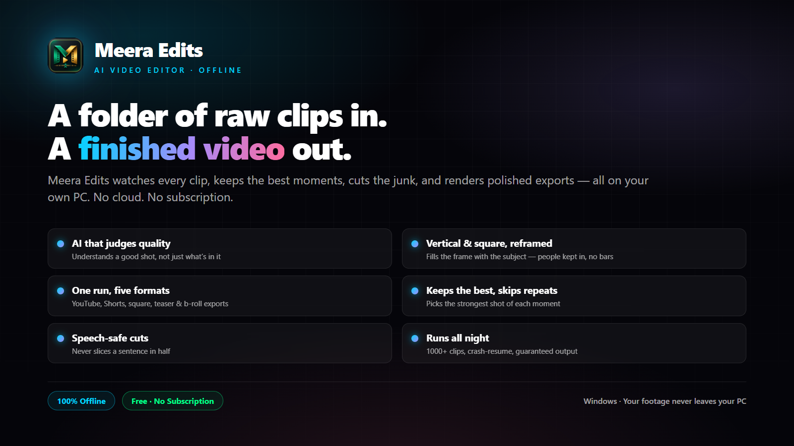

A folder of raw clips in.
A finished video out.
Meera Edits watches every clip you shot, keeps the best moments, cuts the junk, and renders polished exports for every platform — entirely on your own PC. No cloud. No subscription.

The first cut, automated
Every stage runs locally with a bundled neural network — nothing ever leaves your PC.
Offline AI shot selection
A bundled ONNX neural network scores every scene for subject clarity, focus and salience.
One run, five formats
YouTube 16:9, Shorts 9:16, square 1:1, a teaser and a b-roll compilation from one analysis pass.
Runs all night
Crash-resume checkpointing and hang watchdogs keep 1000-clip batches moving to a guaranteed output.
Smarter selection, richer output
AI scene-similarity dedup New
The neural network now recognises the same scene shot from a different angle using image embeddings — not just a pixel hash — so near-duplicate moments are collapsed and your edit never repeats itself.
Background music, your way New
Pick None, Smart (music only on quiet, scenic parts) or Whole video. Original peaceful music fades in and out and ducks automatically under every voice.
World-class text overlays New
Five polished styles — minimal, elegant, bold, lower-third and boxed — with your choice of font, accent colour, screen position and fade or slide animation. Broadcast-grade legibility on any footage.
Run log beside your footage New
Every edit writes a timestamped log next to your clips. If anything ever goes wrong — even a crash — it's recorded, so nothing fails silently overnight.
Your footage is not going to edit itself.
Actually… now it is.
Free forever. No account. Installed in two minutes.